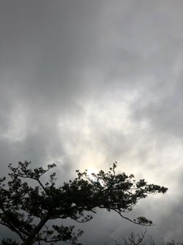
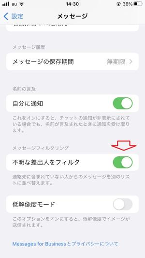
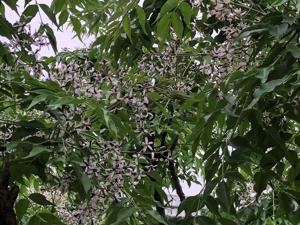

うるがいの話 ある日
最新: 電子音【うるがいの話 ある日】とは 一日だけのプログです
『うるがいの話』の最新一日だけのプログで、通信料が少なく経済的だ。カニの画像をクリックすると全ての日付が載る『うるがいの話』サイトを表示します
|
|
【うるがいの話】 うるがい(ｳﾙｶﾞｲ urugai)とは、『もずくがに』の名前でとても大きくなります。 |
|---|---|
|
|
【カミマヤーの話】 猫のことを方言でマヤーといいます。カミマヤー（kamimayaa）とは、神の猫のことです。 |
|
【たながぁの音楽】 たながぁ（ﾀﾅｶﾞｰtanagaa）とは手長えびのことで、何種類かあり大きいのは車 エビぐらいになります。 |

|
【ぶながぁの話】 ぶながー(bunagaa)とは、赤い髪の毛、赤い身体、そして身長は１ｍ２０ｃｍ ぐらい、川の蟹を食べているの目撃された。場所は沖縄県国頭郡大宜味村のと ある村僕の隣近所に住んでいる爺さんから、聞いた話です。 |
|
|
【ギーマの話】 ギーマ(giima)とは、山原の里山に咲くスズランに似た、 花を付けます。実は食べられます、 気が付くと口の周りが紫になっています。 |
2022年03月31日 (木）電子音
16:16
 
新車を受け取ったが、後部座席側のフィルムの貼り付けの作業が残っていたの
で販売店に持っていく。それ以外に、ハイブリッド車特有のエンジン駆動でな
いバッテリー使用の低速時のキュルキュル電子音が、かなりうるさいダメもと
でさげられるのならとお願いする。チェックしてもらったがダメだった、残念
最近の新車は音を大きくしているもよう。『エンディングカット』（納棺師の
技術を持つ理美容師が、遺族の声に耳を傾けながら、故人の髪をセットするこ
と）のドラマをみた。父親が理髪店を経営していた高校の同級生が、理美容師
を目指していたが、今頃ハサミを持っているのだろうかとフと思った。

令和３年度の最後の日である、前の職場でとてもお世話になったカサイさんも
本日付けで別の場所へ行くことになっているらしいが、私はよくよく人には恵
まれていた、懐かしい。仕事を辞めて２年になる、コロナ禍でなければいろい
ろと集まりがあったかもしれないが、残念である。既に巷では第７波に入った
かの気配がする。暑くていま扇風機をつけている。
１６時０９分 ビットコインの総資産 ￥１６、５４８↓